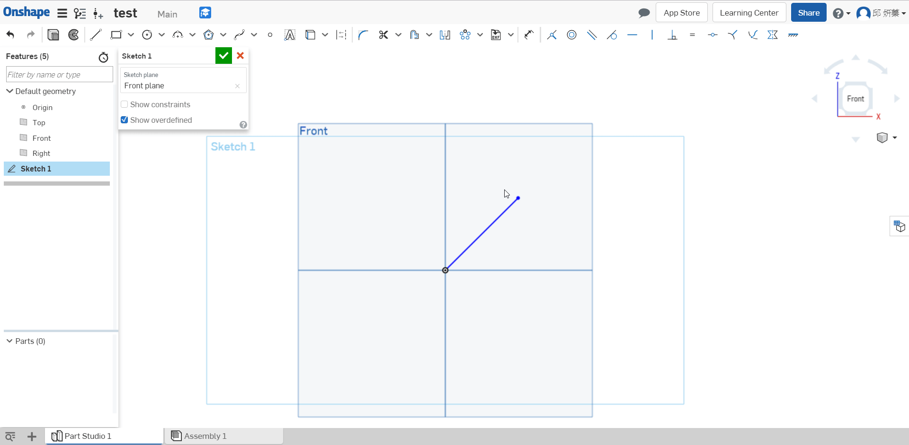
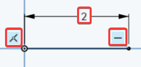
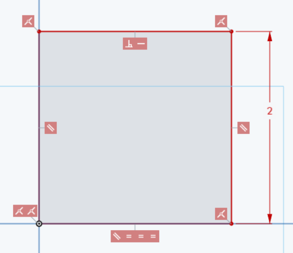
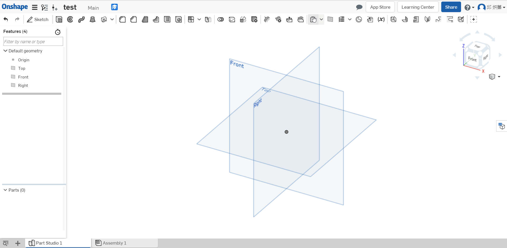
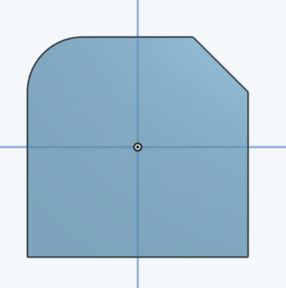

Q : What is design intent(設計意圖)? Describe(描述) in your own words.
A : Design Intent is the practice of developing your project’s(項目) objectives(目標) and requirements(要求) even before working on your design.
Q : What is the difference between sketch entities(實體) that are colored blue, black, and red?
Blue means it is underconstrained(不受約束), black means it is fully constrained(完全約束), and red means it is overconstrained(過度約束).



Q : What is automatic inferencing(自動推理), and how is it utilized(利用)?
A : When Onshape automatically assigns(指定) constraints to sketch entities while sketching. It can be activated by(激活) hovering over an existing entity, or temporarily(暫時) turned off by selecting the [shift] key
Q : Which feature is this and what is it used for:plane ?
A : This is the plane tool, used to create new planes in addition to(除了) the default
Top/Right/Front planes.

Q : How are fillets and chamfers similar? How are they different?
A : They are the same in that both features are applied to edges only, they are different in that a fillet creates a round profile, and a chamfer creates a flat profile.
左邊為圓角，右邊為倒角
